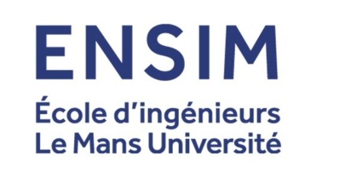

2025 — présent
Ingénieur ASTRE
- Linux embarqué — driver development — développement web
- Développement algorithmique — conception d'IHM
- Communication réseau & protocoles IP — gestion de projets
Cette formation m'permet d'approfondir la conception de systèmes temps réel embarqués, du driver bas niveau jusqu'à l'interface web, avec une vision système complète — réseau, IHM, gestion de projet.